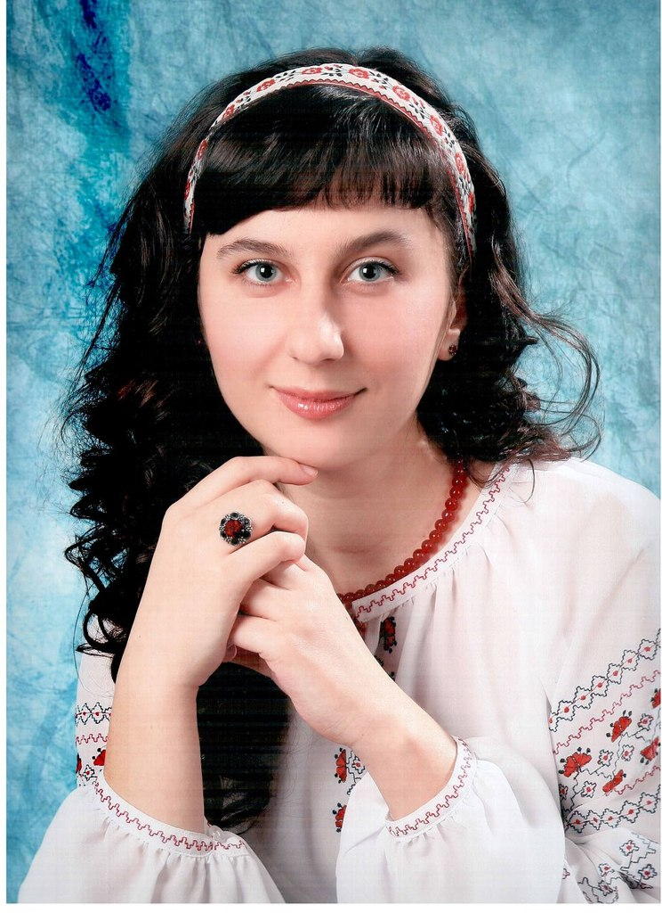

Yuliia Helievierova
English and classic Western literature teacher
- 11, Popudrenka Street, apt.26
- Chernihiv
- Ukraine, 14017
- Click to call

Profile
- 11, Popudrenka Street, apt.26
- Chernihiv
- Ukraine, 14017
- Click to call
Profile
Highly motivated active science-oriented teacher of English and classic Westeren literature. Always responsible and hardworking in reaching the goals and tasks which I undertake. I am strategic thinker and a good listener, able to learn new concepts quickly. I can assimilate new material efficiently.
Education
- T.H.Shevchenko Chernihiv National University/2007-2012 (The Certificate of Excellence)
- Master of Education (high school and university teacher of English and World Literature), Chernihiv Higher, from 2007 to 2012 (5 years))
- National Academy of Educational Sciences of Ukraine/2005-2007
- Bachelor of economics and employee management, Chernihiv, 2005-2007 (2 years)
- Professional College of Transport and Computer Technologies of Chernihiv Polytechnic National University/2002-2005 (The Certificate of Excellence)
- Senior specialist associate degree, enterprise economy, Chernihiv, 2002-2005 (3 years)
Work Experience
- English teacher, Rsearch assistant
- Gymnasium 271, Sain-Petersburg/2019-2022
- English teacher
- Public School 451, Sain-Petersburg/2017-2019
- Private English teacher/2012-2017
Hobbies and Interests
- Reading
- Playing the piano
- Writing essays
- Research in sphere of language personality and modeling of authors image of the world